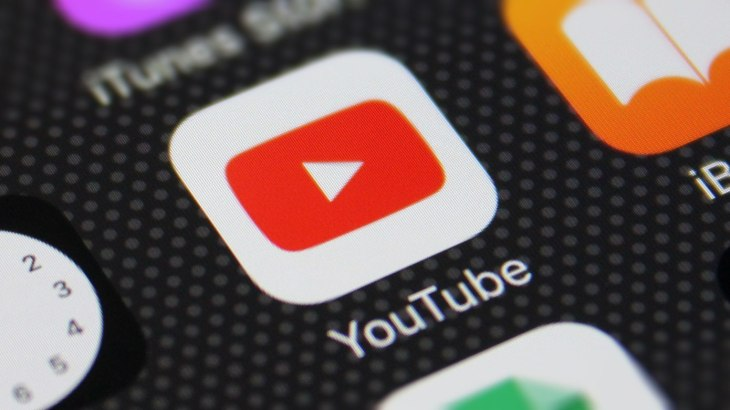

What is Youtube?
Youtube is a video sharing platform that can be used and viewed from anyone around the world. All you need to join it is a camera, a computer of some sort and a connection to the internet!
How can Youtube be used for educational purposes?
Although YouTube is mainly used for entertainment purposes, it also has a variety of other uses. One of those being Education, students can search for video tutorials on how to complete some of their schoolwork if they’re stuck on a certain aspect. Similarly, if teachers / professors would like to use a visual element to aid in explaining a concept to their students are a quick YouTube search away from finding exactly what they are looking for. It’s rare to find a topic that won’t have any information on a subject with how huge YouTube has become and how much content has been uploaded to the service. In addition to have informational content that can be used for Education, most topics you can think of will have users that have created video tutorials on how to complete certain tasks. Anything you want to know how do, YouTube will most likely have a video tutorial for it.
Do people actually use Youtube for educational purposes?
Many high-profile Universities from around the world have their own YouTube channels where they publish their own educational content that is of benefit to students. Some of these include: MIT (Science of cornstarch and water) University of Oxford (How to Apply – Undergrad Admissions) The University of Oregon (Pushing the Boundaries: Adaptive Design at the UO) The University of Virginia (UVA Students Unearth the Past)
How to get started using Youtube for the first time.
First, you will need to type www.youtube.com into your web browser to access the website Next use the search bar at the top of the home page to search for a specific topic of tutorial you want like so: